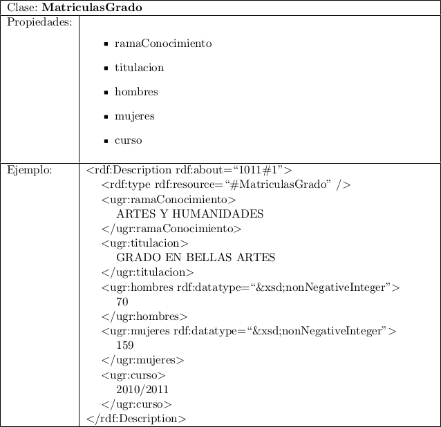
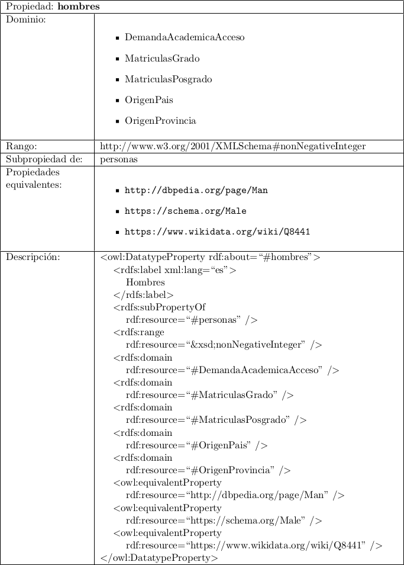

Trabajo Fin de Máster
Datos Abiertos en la Universidad
Autor: Germán Martínez Maldonado
Tutor: Juan Julián Merelo Guervós
Trabajo realizado bajo licencia CC-BY-SA 4.0

Descripción del problema
Obtener información de los datos contenido en un portal de datos abiertos mediante peticiones a un interfaz en forma de consultas
Descripción del problema
Legislación vigente sobre reutilización de la información del Sector Público (Ley 37/2007 de 16 de noviembre 2 y Real Decreto 1495/2011 de 24 de octubre 3 )
Descripción del problema
Máxima reutilización ➡️ Información comprendida automáticamente por máquinas y estás utilicen su capacidad de procesamiento para generar más información: INFERENCIA
Web semántica
Tim Berners-Lee y su idea de la Web "actual" (año 2001): está demasiada orientada a que los contenidos sean procesados por humanos.
Web semántica
- Uso de estándares para su desarrollo: RDF, RDFS, OWL y SPARQL
- Recursos expresados en forma: sujeto-predicado-objeto
- Diseño de ontologías
- Uso de datos enlazados (linked data)
Web semántica en otras universidades
- Universitat Pompeu Fabra: ❌
- Universidad Pablo de Olavide: ❌
- University of Southampton: ✔️
Objetivos
- Desarrollo de ontologı́a
- Procesamiento de los conjuntos de datos del portal de datos abiertos
- Proveer de un punto de acceso SPARQL
Modelos de desarrollo
- METHONTOLOGY
- On-To-Knowledge
- Protégé
Protégé
- Determinar el dominio y el alcance de la ontologı́a
- Considerar la reutilización de ontologı́as existentes
- Enumerar términos importantes para la ontologı́a
- Definir las clases y su jerarquı́a
- Definir las propiedades de las clases
- Definir las restricciones de las propiedades
- Crear instancias
Recursos
- Personal
- Hardware
- Software
- Ansible
- CKAN
- NGINX
- OpenLink Virtuoso Open-Source Edition
- Vagrant
Estándares de la Web Semántica
- RDF Schema
- OWL
- SPARQL
RDF Schema (RDFS)
- Extensión de RDF
- Declaración de clases
- Restricciones entre las clases
- Restricciones de las propiedades
Clases en RDF Schema
- rdfs:Class
- rdfs:Property
- rdfs:Resources
Propiedades en RDF Schema
- rdf:type
- rdfs:subClassOf
- rdfs:subPropertyOf
Restricciones en RDF Schema
- rdfs:domain
- rdfs:range
OWL
- Extensión de RDF Schema
- Definir restricciones
- Definir axiomas
- Razonamientos basados en la lógica descriptiva
Clases e instancias en OWL
- owl:Thing ➡️ owl:Class
- Pueden ser producto de:
- owl:intersectionOf
- owl:unionOf
- owl:complementOf
Propiedades en OWL
- Liteales (owl:DatatypeProperty)
- Relacionales (owl:ObjectProperty)
- Tipos de propiedades
- Transitiva (owl:TransitiveProperty)
- Simétrica (owl:SymmetricProperty)
- Funcional (owl:FunctionalProperty)
- Inversa (owl:InverseOf)
- Inversa funcional (owl:InverseFunctionalProperty)
Restricciones y axiomas en OWL
- Restricciones
- Valores (owl:allValuesFrom, owl:someValuesFrom, owl:hasValue)
- Cardinalidad (owl:maxCardinality, owl:minCardinality, owl:cardinality)
- Axiomas
- Clases o propiedades disjuntas (owl:disjointWith, owl:AllDisjointClasses, owl:AllDisjointProperties)
- clases o propiedades son equivalentes (owl:equivalentClass, owl:equivalentProperty)
SPARQL
- Lenguaje recomendado por la W3C para acceder a datos almacenados en RDF
- Acepta diferentes formatos de datos: RDF/XML, N3, Turtle, RDFa
- Consultas en formato Turtle
SPARQL
PREFIX ugr:
SELECT ?X ?nombre
WHERE {
?X ugr:titulacion ?nombre
}
LIMIT 5
SPARQL
| X | nombre |
|---|---|
| ENLACE_A_RECURSO#1 | "TITULACION 1" |
| ENLACE_A_RECURSO#2 | "TITULACION 2" |
| ENLACE_A_RECURSO#3 | "TITULACION 3" |
| ENLACE_A_RECURSO#4 | "TITULACION 4" |
| ENLACE_A_RECURSO#5 | "TITULACION 5" |
Razonamiento e inferencia
- Personas
- Hombres
- Mujeres
Metodología
Dominio y alcance de la ontología
- Describir la información contenida en el portal de datos abiertos de la UGR
- Datos de carácter universitario: información de demanda académica, matriculaciones, tasas académicas...
Ontologı́as existentes
- Universitat Pompeu Fabra: ❌
- Universidad Pablo de Olavide: ❌
- DBpedia: ✔️
- Wikidata: ✔️
Descripción de los conjuntos de datos
- Demanda académica: procedimientos acceso
- Demanda académica: titulaciones
- Matrículas: grado
- Matrículas: posgrado
- Número medio de créditos
- Oferta de titulaciones: doctorado
- Oferta de titulaciones: grado
- Oferta de titulaciones: másteres oficiales
- Origen geográfico de estudiantes por país
- Origen geográfico de estudiantes por provincia
- Tasas académicas por titulaciones
Descripción de las clases del sistema
- DemandaAcademicaAcceso
- DemandaAcademicaTitulacion
- MatriculasGrado
- MatriculasPosgrado
- NumMedioCreditos
- OfertaTitulacionDoctorado
- OfertaTitulacionGrado
- OfertaTitulacionMaster
- OrigenPais
- OrigenProvincia
- TasasAcademicasTitulacion
Descripción de las propiedades
- Campus
- Centro
- Número medio de créditos matriculados
- Número medio de créditos presentados
- Número medio de créditos superados
- Curso
- Hombres
- Mujeres
- Grado
- Máster
- Doctorado
Definición de clases del sistema
Definición de propiedades del sistema
Desarrollo
- Conversión de los datos CSV a RDF/XML
- Infraestructura para el punto de acceso SPARQL
- Servidor web
- Hospedaje ontología y recursos
- Resolución URIs ontología y recursos
- Respuestas "application/rdf+xml" y "text/turtle"
- Servidor almacenamiento RDF y punto de acceso SPARQL
- Carga de datos de la ontología
- Carga de datos de los recursos
Resultados
PREFIX ugr: <http://cabas.ugr.es/ontology/ugr#>
PREFIX dcterms: <http://purl.org/dc/terms/>
SELECT ?X ?titulacion ?hombres ?mujeres
WHERE {
?X ugr:titulacion ?titulacion .
?X ugr:hombres ?hombres .
?X ugr:mujeres ?mujeres .
?X ugr:curso ?curso .
?X dcterms:type ?tipo .
FILTER (?curso = "2015/2016" && ?tipo = "MatriculasGrado")
}
ORDER BY ?titulacion
Resultados
PREFIX ugr: <http://cabas.ugr.es/ontology/ugr#>
PREFIX dcterms: <http://purl.org/dc/terms/>
SELECT ?X ?titulacion (sum(?_personas) as ?personas)
WHERE {
?X ugr:titulacion ?titulacion .
?p rdfs:subPropertyOf* ugr:personas .
?X ?p ?_personas .
?X ugr:curso ?curso .
?X dcterms:type ?tipo .
FILTER (?curso = "2015/2016" && ?tipo = "MatriculasGrado")
}
GROUP BY ?X ?titulacion
ORDER BY ?titulacion
Conclusiones y trabajos futuros
- Mediante el uso de ontologías podemos extraer información que no está explicitamente definida
- Valor añadido a la reutilización de los datos abiertos: uso público
- Ventaja de poder cruzar datos de diferentes bases de datos
Referencias bibliográficas
- "Semantic Web roadmap". Tim Berners-Lee. 14/10/1998. https://www.w3.org/DesignIssues/Semantic.html
- "Ontology Learning for the Semantic Web. IEEE Intelligent Systems. Volume 16, Issue 2, March/April 2001, Pages 72-79". Alexander Maed- che, Steffen Staab. Marzo/Abril 2001.
- "Agents and the Semantic Web. IEEE Intelligent Systems. Volume 16, Issue 2, March/April 2001, Pages 30-37". Marzo/Abril 2001.
- "Semantic Web: The roles of XML and RDF. IEEE Internet Computing. Volume 4, Issue 5, September 2000, Pages 63-74". Stefan Decker, Sergey I. Melnik, Frank Van Harmelen, Dieter Fensel, Michel C.A. Klein, Jeen Broekstra, Michael A. Erdmann, Ian Horrocks. Marzo 2003.
- "Ontology mapping: The state of the art. Knowledge Engineering Review. Volume 18, Issue 1, March 2003, Pages 1-31". Yannis Kalfoglou, Marco Schorlemmer. Marzo 2003.
- "Linked Data - Design Issues". Tim Berners-Lee. 18/06/2009. https://www.w3.org/DesignIssues/LinkedData.html
- "Programming the Semantic Web". Toby Segaran, Colin Evans, Jamie Taylor. Julio 2009.
- "Metodologı́as y métodos para la construcción de ontologı́as. Scientia Et Technica. Nº 50, Abril de 2012. Páginas 133-140". Abril 2011.
- "Learning SPARQL: Querying and Updating with SPARQL 1.1". Bob DuCharme. Julio 2013.